哲平診療所
大阪府吹田市にある「哲平診療所」様の 広報ＰＲを担当させていただきました。
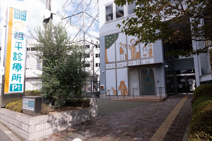同社は、クリニック名も、コンセプトも、
何も決まっていない。ただ、そこには
熱い思いだけがあったのです。
その思いを叶えるために、僕たちは
何度も何度もヒアリングを行いました。
そうして完成したデザインやブランディングは、
まさに、院長の上杉さんが抱く
理想を体現したものでした。
そんな同社に弊社が取り組んだ施策を紹介します。
１，上杉院長の熱い思い
近年、ほとんどの病院がただ病気を治すことだけに
注力してしまっていると、上杉院長が語ります。
でも、病院の本来の目的はそうではないのです。
ただ病気を直して終わりではなくて、
病気とどうやって向き合っていくのか、
病気を持ちながらもどうやって生きていくのか、
家族と、友達と、過ごしていくのか・・・。
目の前にある病や症状を治すだけが目標ではなく、
自分らしく楽しく生きる人生の伴走者のような
存在に、医者自身がなること。
他のどんな病院と比べても、全く違う。
新しい病院を作るんだ。上杉院長の
この熱い思いが、開業へと促したのです。
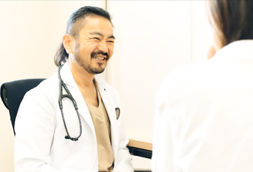
２，ブランディングの重要性
どんなにいい商品を作っていても、
どんなにいい価値を提供していても、
その会社のことを知られなければ、
伝わらなければ、意味がありません。
他の会社と差別化し、自身の会社ならではの
ポジションを確立することが大切です。
その過程こそがブランディングであり、
事業成長のために必要不可欠な要素となります。
その重要性を上杉院長は深く理解されていました。
だからこそ、自身だけで考えるのではなく、
プロの僕たちに依頼することを決めたそうです。
３，新しい病院を作る
病院のWEBサイトを見てみれば分かるように、
固くて、当たり障りないデザインばかり。
デザインにこだわりがある
サイトなんてなかなか見ません。
上杉院長は、このようななんの特徴もない
デザインは嫌だったそう。
僕たちにとっても、せっかく依頼して頂いた方には
その会社ならではの個性を提供したいです。
誰でもできるデザインや、ありきたりなデザインを
提案するのは、僕たちの仕事ではない。
僕たちは、その会社ならではの
ブランディングや広報の力を使って
大きく事業成長をさせる力がある。
上杉院長はブランディングへの理解がとてもある方
だったため僕たちと協力することでよりよいものが
作れることは、やる前から確信していました。
４，理想通りのブランディング
そんな理由も相まって、上杉院長はとても高い
クオリティを僕たちに要求してきます。
僕たちはプロ。幾度となくヒアリングを繰り返し、
期待に応えるために全力を尽くしました。
ブランディングをする際に
とても重要となるのは、以下の２点です。
①キャッチコピー
②ロゴ
① キャッチコピー編
キャッチコピーとは、『そのブランドのコンセプトを
ワンフレーズで表現する言葉』のことです。
哲平診療所の強み・良さが一言で伝わるもの。
加えて、キャッチーで覚えやすくて
分かりやすくて、ワクワクするもの。
そんなワンフレーズを１００案以上考え続け、
実際に上杉院長に提案したのは、厳選した５０案。
そうしてたどり着いたのが
「楽しく生きるための診療所」です。
とてもシンプルで単純すぎると思うかもしれません。
しかし、むしろそれがいいのです。
明るく生きるんだ！というイメージや印象を与えて、
体現できているキャッチコピーになっています。
まさに、「この診療所は何がしたいのか？」や
「他の病院とは何が違うのか？」を、明確に
分かりやすく表している一言でしょう。
これこそがまさにブランディングであり、
これから作る全てのデザインが決定しました。
② ロゴマーク編
続いて、キャッチコピーをもとに、
それに相応しいロゴマークを制作します。
ロゴマークは、全てのデザインの根幹となります。
このロゴマークを起点に名刺や看板，ちらし
などの全てのデザインが決定するため、
ロゴマークは全てのデザインの根幹ともいえます。
ロゴの持つ力は非常に大きいです。
まさにその証明となるのが、あの有名な
ファッションブランドの『ＵＮＩQＬＯ』です。
昔は「ユニバレ」という言葉まで生まれ、
ユニクロは着ていることが恥ずかしく、当時は
隠して着ることが当たり前だったのです。
しかし、このブランドイメージをロゴの改変のみで
大きく変えることに成功し、今や錦織圭選手の
左胸に大きく貼り付けられるほど、オシャレで
良いものへとブランドイメージを変えたのです。
まさに、ロゴはブランドの有りたい姿、
認識してもらいたい姿を現すものと言えます。
つまり、その会社の目指すものや方向性を
定めるのがキャッチコピー、それをビジュアルで
伝えるのがロゴ という役割を果たしています。
哲平診療所のロゴも、より良いブランドイメージに
するために「楽しく生きるための診療所」という
キャッチコピーに適したものを考え抜きました。
そうして決まったのが、このロゴです
またしても単純な構成ではありますが、 色やデザインにも色々なメッセージを込め、 細かなところにも気を配った自信作です。
（ⅰ）色
【哲平】を白抜きしているのは、
納戸（なんど）色という色です。
藍染めの１つで、江戸城内の垂れ幕に使われて
いました。日本を象徴する伝統的な色です。
僕たちは、この色に
『西洋医学だけの考え方だけではなく、
日本人が昔から大事にしてきた伝統的な健康法を
学んで、治療に生かしていきたい。』
という上杉さんの想いを込めました。
「和食」や「早寝・早起き」などの
日本人が古くから大切にしてきた「健康法」や
「しきたり」は、ヒトの健康と調和を取れている。
ただ目の前にある病を治して終わりではなくて、
もっと根本的なものから治していく。
そのような昔からの知恵を、もっともっと現代に
取り入れていきたい。 そんな想いがあります。
「納戸色」の補色としての立ち位置を
担う色が、「オレンジ」です。
単純にロゴを強調させるだけなく、
楽しさや明るさを感じさせるこの色は
「今までの病院とは違う、哲平診療所は明るくて
楽しい場所なんだ。」という印象を与えます。
２つの色はそのような関係になっています。
（ⅱ）フォント
フォントも、明るくて楽しそうな印象を
与えるものを選択しました。
しかし、実はこの選択は病院にとって前代未聞。
ほとんどの病院で使われているフォントは
とても固くて、どこか冷たさを感じます。
しかし、上杉院長は、そこに疑問を感じていた
のです。だから僕たちは、敢えて明るくて
ポップなフォントをご提案しました。
（ⅲ）イラスト
それに加えて、「人生を明るく照らす」を
モチーフにお日様のイラストも取り入れました。
ダイレクトに楽しさを伝えるため、表情は笑顔に。
そのためのお日様とスマイルです。
『診』の右側を聴診器にして、ロゴを見ただけで
病院だとひと目で分かるようにも工夫しました。
（ⅳ）いつでも使えるデザインに
横向きだけでなく,縦向きでも自然に見えるように
仕上げることで、いつでもどこでも使えるロゴに。
名刺、看板、ポスター、診察券などどんなものとも
組み合わせやすい、汎用性の高いデザインです。
また、病院は一時的な場所ではありません。
時代を超えても古臭くないデザインか？
目先の流行に囚われていないか？
５年後、１０年後もずっと使えるのか？
これから先、ずっと使えるような
期間としての耐久性があるデザインにしました。
こうして決められたロゴを基に、全てのデザインが
決定します。これにより統一感が生まれ、
哲平診療所ならではの世界観に落とし込まれます。
このように、デザインや世界観の統一を徹底することで
初めてブランドイメージが作り上げられます。
大衆に認知される「ブランド」の誕生です。
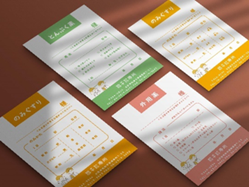
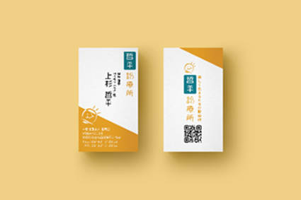
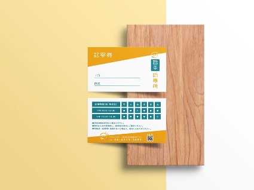
５，ＨＰは入口
ＨＰに訪れたということは、その会社やお店に
お客様が訪れたというのと同じです。
そのため、スマホだと読みにくいなと感じるＨＰを
頻繁に見かけますが、非常に勿体ないなと思います。
そこで、哲平診療所のＨＰはスマホから開いても、
ＰＣから開いても、パッと開いたときに『良いな』
と思ってもらえるようなＨＰに仕上げました。
サイトのはじめに『ここはただの診療所ではなく、 楽しく生きるための診療所なんですよ。』という 上杉院長の熱い思いも、しっかりと書いています。
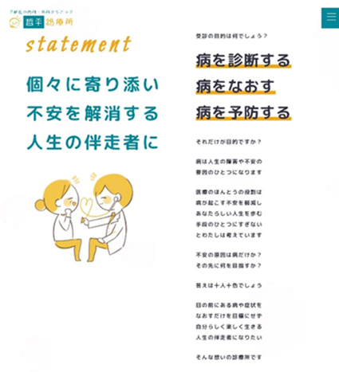
更に、院長の人柄も書いて、初めての訪れた方でも 安心して受診できる雰囲気作りを徹底しました。
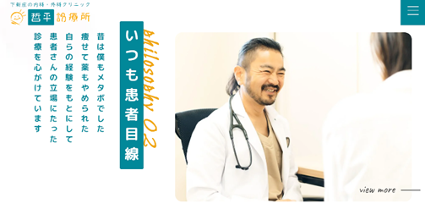
もちろん、ここでも統一感は怠りません。
ロゴと同じく、フォントは丸みのものを選択し、
誰でも読みやすいように、文字を書きすぎない。
イラストは、馴染みやすくて可愛らしいものを。

ここまで統一感を徹底することで『今までの病院と
全く違う、新しい病院ができたのだ』と感じさせる
ことができるブランディングが形成されます。
哲平診療所 | 楽しく生きるための診療所 下新庄のクリニック (teppei-clinic.com)
６，デザインだけでなく、宣伝まで
病院は店舗型ビジネスのため、周辺の地域と密接に
なり、知名度を上げることがとても重要です。
そのため、今までに決めたキャッチコピーや
ロゴを基に「ちらし」や「ポスター」・
「看板」なども制作。これらを配布し、
地域に認知してもらえるよう、宣伝に努めました。
新聞折り込みについては、産経新聞・読売新聞・
毎日新聞・朝日新聞など主要な新聞４社は全て網羅し、
計３万５千部を折り込みました。
加えて、ちらしは１万部をポスティングしました。
ただ単に制作するだけではなく、それを届ける
ところまで徹底する。これが、事業成長を実現する
ための大切な手段になるのです。
ＭＥＯ対策ももちろん行います。Ｇｏｏｇｌｅ
マップで地域検索をして偶然見つけた方にも
コンセプトや思いが伝わるように、
開業時間や商品・クリニックの説明を詳細に
記載し、写真の登録まで行いました。
 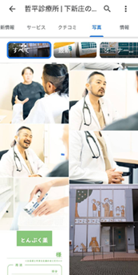
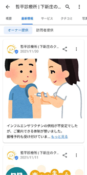
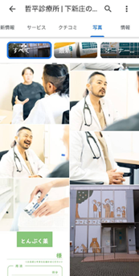
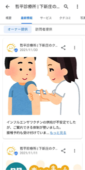
哲平診療所 | 下新庄のクリニック 楽しく生きるための診療所 - Google マップ
また、口コミ対策もしっかりと。口コミを誘導し、
沢山集めることでお客さんに安心してもらいます。
これが集客につながるのです。
単純にデザインだけでなく、発信まで。
今まで、ブランドコンセプトをしっかり固めてきた
からこそ、広報の効果が最大限に高まります。
７，僕たちだからできること
今回は僕たちにとって、とても嬉しい依頼でした。
ブランディングの大切さを知っている人は少ないし、
まして新しい病院のデザインを１から作るのは
本当にやりがいのあるものだったためです。
上杉院長も、今回の依頼に対する成果にとても満足
していて、厚く僕たちに感謝して頂けました。
ロゴ作成や様々なもののデザインなどを通して、
上杉院長の熱い思いをより体現できたなと僕たちも
思っています。胸を張って言えます。
・ブランディングで困っている
・広報に力を入れたい
・事業が伸び悩んでいる
と、悩んでいるなら、
自社の本質的な魅力はなんなのか？
他社と明確に違うのはどんな点なのか？
どんな想いがあるのか？
なぜ、自分たちではないとダメなのか？
初心に戻って、考え直してみてほしいです。
そうすることから、全てのデザインが決定します。
仮に決まっていたとしても、届きやすい言葉で、
キャッチーな言葉になっていないと伝わらない。
しかし、それを考え直すことはとても難しい。
自社の未熟さや他社との差に気づき、悩み苦しむ。
だからこそ、僕たちがいます。僕たちの存在が、
彼らの助けとなるのです。一緒に仕事をして、
あなたの事業成長を全力でサポートしたいです。
そして、ブランディングの持つ力の大きさを
ぜひともあなたに実感してほしいです。
物があふれるこの時代に、差別化するのは難しい。
どこの飲食店もある程度おいしいし、
どこのお店もひどい接客なんてしない。
きわめてひどいお店なんて無い。
いい製品を作ればパクられ、安いものが売れる。
そんな中で、どうやって生き残っていくのか？
答えは、商品の性能だけを買ってもらうのではなく
その商品にかける思いまで買ってもらうこと。
コンセプトや思いが商品に伝わるからこそ、
買ってもらえる商品になるんです。
もしそれでお困りなら、プロからの意見が
重要です。ぜひ僕たちに、相談してみませんか？
僕たちに、任せてみませんか？